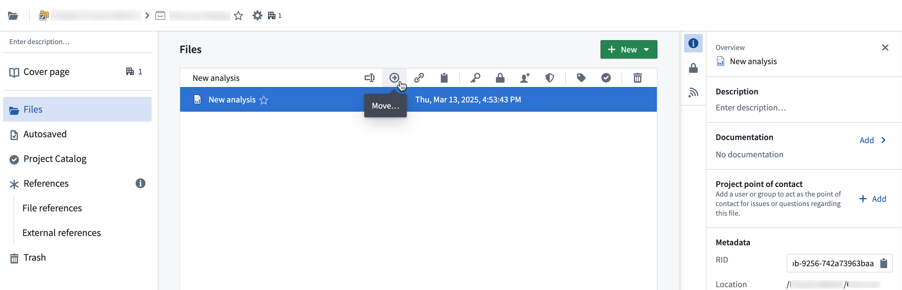
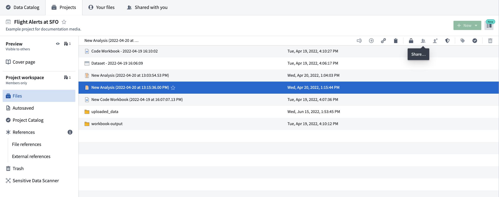
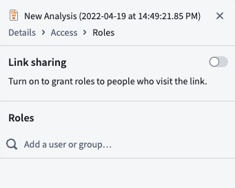

It is simple to move and share resources between spaces on the Palantir platform.
Select a file to move, then select the Move icon.

In the Move window, change the file name if desired, choose a new location for your file using the location dropdown menu and select Move. You may also use Browse to navigate for your preferred move location.
:::callout{theme="neutral"}
You will need specific cross-Project permissions to move a file out of a Project and into another. Typically, only the resource Owner can move files out of Projects.
:::
When you create a new resource (a dataset or a Contour analysis, for example), you can make the resource available to a group of users by saving it to a relevant Project.
You can also create resources directly from your Project by selecting + New in the upper right of the Project dashboard.

The platform also allows you to share files and other resources and view permissions with Share actions. Select any resource and then the Share icon to view the Share panel.

In the Share panel, you can activate link sharing so anyone with the link can access the resource. You can also grant access to specific users or groups.
